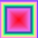
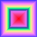
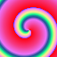
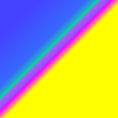
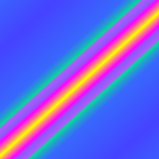
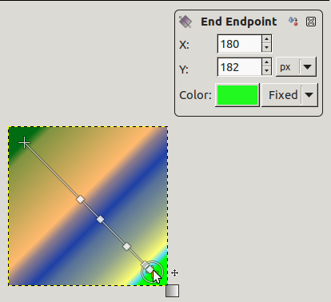
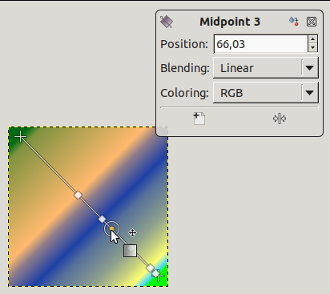

Essa ferramenta preenche a área selecionada com um degradê das cores frente e de fundo por padrão, mas existem outras opções. Para produzir um degradê, arraste o cursor na direção que você deseja que o degradê avance, e solte o botão do mouse quando você sentir que tem a posição certa e o tamanho do seu degradê. A suavidade do degradê depende de quão longe você arrasta o cursor. Quanto mais curta for a distância, mais brusco ele será. Vale mencionar que o nome em inglês dessa ferramenta é “Blend Tool”, que ao pé da letra seria ferramenta de “Mistura” — pode acontecer de você encontrar trechos do manual, ou no próprio GIMP usando esse outro nome.
Se você clicar e arrastar fora da seleção, apenas uma parte do gradiente aparecerá na seleção.
Existe um número surpreendente de coisas que você pode fazer com essa ferramenta, e as possibilidades podem até parecer um pouco de mais no inicio. As duas opções mais importantes que você tem são o degradê e a forma. Clicar no botão degradê nas opções da ferramenta exibe a janela de seleção de degradê, permitindo que você escolha entre uma variedade de degradês instalados com o GIMP; você também pode criar e salvar degradês customizados. Informações adicionais sobre degradês podem ser encontradas em Seção 6, “Degradês” and Seção 3.5, “Diálogo de degradês”.
Para a forma, existem 11 opções: Linear, Bi-linear, Radial, Quadrado, Cônico (simétrico), Cônico (assimétrico), Acompanha a forma (angular), Acompanha a forma (esférico), Acompanha a forma (com ondas), Espiral (sentido horário), e Espiral (sentido anti-horário); estas estão descritas abaixo. As opções de acompanhar a forma são as mais interessantes: elas fazem com que o degradê siga a forma do contorno da seleção, não importa o quão sinuosa seja a forma. Diferente de outras formas, degradês acompanhando a forma não são afetados pelo tamanho ou direção da linha que você desenhar: tanto para eles como como para todos os outros tipos de degradês, você precisará clicar dentro da seleção e mover o mouse, mas a forma aparece independente de onde você clicar e como mover.
![[Dica]](images/tip.png)
|
Dica |
|---|---|
|
Confira a opção de “Diferença” no menu modo, onde fazer a mesma coisa (mesmo com opacidade total) irá resultar em fantásticas textura de redemoinho, se alterando e ficando mais complexas a cada vez que você repete a operação. |
Existem várias formas para ativar a ferramenta:
-
A partir do menu da janela de imagem: → → .
-
Ícone da ferramenta de clonagem na caixa de ferramentas
-
Ao pressionar o atalho de teclado C.
Normally, tool options are displayed in a window attached under the Toolbox as soon as you activate a tool. If they are not, you can access them from the main menu through → → which opens the option window of the selected tool. The available tool options can also be accessed by double clicking the corresponding tool icon in the Toolbox.
- Modo, Opacidade
- Veja Opções em comum das ferramentas de pintura para uma descrição das opções da ferramenta que são aplicáveis a todas as ferramentas de pintura.
- Degradê
-
Uma variedade de texturas de degradê podem ser selecionadas a partir da lista de seleção. A ferramenta cria uma textura com uma variação de cores que vai da cor de frente até a cor de fundo ou outras cores introduzidas, na direção que o usuário determinar ao desenhar a linha na imagem. Para os propósitos de desenhar o degradê, a caixa de seleção Inverter
 reverter a direção do degradê com o efeito, por um instante, de formatar as cores de frente e de fundo.
reverter a direção do degradê com o efeito, por um instante, de formatar as cores de frente e de fundo.À direita, um botão para abrir a caixa de diálogo Editor de Gradiente.
- Blend Color Space
-
-
Inclinação: O tamanho do pincel depende da inclinação da caneta.
-
Linear RGB: When this option is chosen, the Blend Color Space is linearized sRGB (defined by the sRGB primaries and a linear tone reproduction curve). This results in gradients that resemble the physical behavior of light. This option should be used if the color, as measured with a colorimeter, should change linearly with the distance from the color stops within the gradient.
-
CIE Lab: When this option is chosen, the Blend Color Space is CIE L*a*b*. This perceptionally uniform color space is used to model human perception of color blending.
-
- Forma
-
O GIMP possui 11 formas, que podem ser selecionadas a partir da lista de seleção. Detalhes de cada uma da formas estão descritas abaixo.
- Linear
-
Esse degradê começou com a cor de frente no ponto de início da linha de desenho e se altera linearmente até a cor de fundo no ponto de fim.
- Bi-Linear
-
Esta forma segue em ambas as direções a partir do ponto de início, por uma distância determinada pela largura da linha desenhada. Isso é útil, por exemplo, para dar uma aparência de um cilindro.
- Radial
-
Este degradê cria um círculo, com a cor de frente no centro e a cor de fundo fora do círculo. Isso dá a aparência de uma esfera sem uma iluminação direcional.
- Quadrado, Forma
-
Figura 14.56. Exemplos de degradê quadrado e acompanha a forma

Quadrado

Acompanha a forma (angular)

Acompanha a forma (esférico)

Acompanha a forma (com ondas)
Existem quatro formas que são uma variante do quadrado: Quadrado, Acompanha a forma (angular), Acompanha a forma (esférico), e Acompanha a forma (com ondas). Todos eles colocam a cor de frente como o centro do quadrado, sendo o centro definido pelo começo da linha desenhada, e a metade da diagonal é o comprimento da linha desenhada. As quatro opções produzem alterações na maneira pela qual o degradê é calculado; fazer experimentos é a melhor maneira de ver as diferenças.
- Cônico (simétrico), Cônico (assimétrico)
-
A forma Cônico (simétrico) dá a sensação de olhar para baixo do topo de um cone, que aparecerá iluminado com a cor de fundo a partir de uma direção determinada pela direção da linha desenhada.
Cônico (assimétrico) é similar ao Cônico (simétrico) exceto que o “cone” parece ter um cume aonde a linha é desenhada.
- Espiral (sentido horário), Espiral (sentido anti-horário)
-
Figura 14.58. Exemplos de degradês em espiral

Espiral (sentido horário)

Espiral (sentido anti-horário)
A forma de espiral cria uma espiral em que a repetição é determinada pelo tamanho da linha desenhada.
- Repetir
-
-
Rodinha: A opacidade depende da posição da rodinha

-
Pressão: Pressione com mais força para tornar a pincelada menos transparente.

-
Existem dois modos de repetir: onda de serra e onda triangular. A textura de serra é conseguida começando pela cor de frente, passando por uma transição para a cor de fundo, e então começando novamente com a cor de frente. A triangular começa com a cor de frente, passando uma transição para a cor de fundo, e então sofrendo uma nova transição para a cor de frente.

-
Onda Triangular: começa com o primeiro plano, transiciona para o fundo, e então transiciona de volta para o primeiro plano.

-
- Deslocamento
-
O valor de deslocamento permite aumentar a “declividade” do degradê. Isso determina o quão distante do ponto inicial o degradê começará. A opçãode “Acompanha forma” não é afetadas por essa opção.
Figura 14.59. Ferramenta de “degradê”: exemplo de deslocamento

Parte superior, deslocamento = 0 ; Parte inferior, deslocamento = 50%
- Reticulado
-
O reticulado é completamente explicado no Glossário
- Amostragem adaptativa
-
Isso é uma forma mais sofisticada de reduzir o efeito de pontilhado, ou faixas de cores de uma transição de cor ao longo de uma inclinação ou linha curva, por exemplo se ocorre uma mudança de cor brusca no degradê em si. Em geral dá melhores resultados que o uso normal,mas é bem mais lenta.
- Modo instantâneo
-
![[Atenção]](images/warning.png)
Atenção A opção deve ser ativada (também com Shift) antes de começar a desenhar o gradiente.
Quando esta opção está marcada, a ferramenta gradiente funciona como no GIMP-2.8: a linha do gradiente desaparece assim que você solta o botão do mouse. Você não pode editar paradas de cor antes de aplicar o preenchimento de gradiente.
- Modificar gradiente ativo
-
Quando esta opção está marcada, a ferramenta gradiente funciona como no GIMP-2.8: o gradiente personalizado não é criado automaticamente e deve ser criado manualmente. A opção pode ser ativada antes de começar a desenhar o gradiente ou se o gradiente ativo não for o gradiente personalizado. Permite alterar gradientes graváveis pelo usuário diretamente em vez de criar cópias deles.


- Edição na tela
-
Todos os recursos antigos da caixa de diálogo Editor de Gradiente estão agora disponíveis diretamente na tela. Você pode criar e excluir paradas de cor, selecionar e movê-las, atribuir cores a paradas de cor, alterar mesclagem e coloração para segmentos entre paradas de cor, criar paradas de cor a partir de pontos médios.
Selecione um gradiente na caixa de diálogo de gradiente. Clique e arraste na tela. Uma linha é desenhada e o gradiente é exibido. Você pode editar este gradiente movendo o ponteiro do mouse nesta linha. Assim que você tentar editar o gradiente, o GIMP-2.10 cria um gradiente personalizado, que é uma cópia do gradiente selecionado. Ele se torna o gradiente ativo e será preservado entre sessões. Aqui, usamos o gradiente Abstract3.

O gradiente Abstract3, com pontos finais
Em ambas as extremidades da linha, você pode ver um Ponto inicial e um Ponto final. Clique e arraste um ponto final (o ponteiro do mouse é acompanhado por uma cruz móvel) para movê-lo para onde você quiser na tela. Uma pequena janela aparece mostrando dados sobre o ponto final selecionado: a posição do mouse (a origem das coordenadas é o canto superior esquerdo da imagem ou seleção), a cor inicial (esquerda) e a cor final (direita) do gradiente.

Atrás (modo de pintura)
![[Nota]](images/note.png)
Nota Se você mover apenas os pontos finais, o gradiente personalizado ainda não é criado.
Na linha, você pode ver vários pequenos quadrados. Estes são Paradas que dividem o gradiente em segmentos. Você pode editar segmentos separadamente. Clique e arraste paradas para movê-las (o ponto final ativo fica amarelo). Assim que você mover uma parada, o gradiente personalizado é criado. A pequena janela de dados mostra um botão que permite remover a parada ativa.

Ponto de parada movido e janela de dados
Se você mover o ponteiro do mouse sobre a linha, um Ponto médio aparece. Então, a pequena janela de dados tem dois botões:
 para criar uma nova parada no ponto médio, e
para criar uma nova parada no ponto médio, e  para centralizar o ponto médio.
para centralizar o ponto médio.
Para Paradas e Pontos Médios, Posição se refere à linha do gradiente: 0 é o ponto inicial, 100 é o ponto final.
Mesclagem: você pode alterar o modo de mesclagem entre duas paradas, usando a lista suspensa. A opção Passo apareceu com o GIMP-2.10.8: ela cria uma transição com borda firme entre as duas paradas de cor adjacentes no ponto médio.
Alterando cor: nas janelas de dados de parada e fim, você tem amostras de cor com uma lista suspensa. A opção padrão é Fixo; isso significa que a escolha da cor será independente das cores de primeiro plano e de fundo. Clique em uma amostra de cor para abrir um seletor de cores.
- Modificadores de tecla
-
O Ctrl é usado para criar linhas retas que são colocadas a ângulos absolutos de 15 graus.
Ou usando a tecla de atalho Shift+U.
- O Editor de Gradiente
-
O Editor de Gradiente ainda existe: Seção 3.5.3, “O Editor de degradês”.